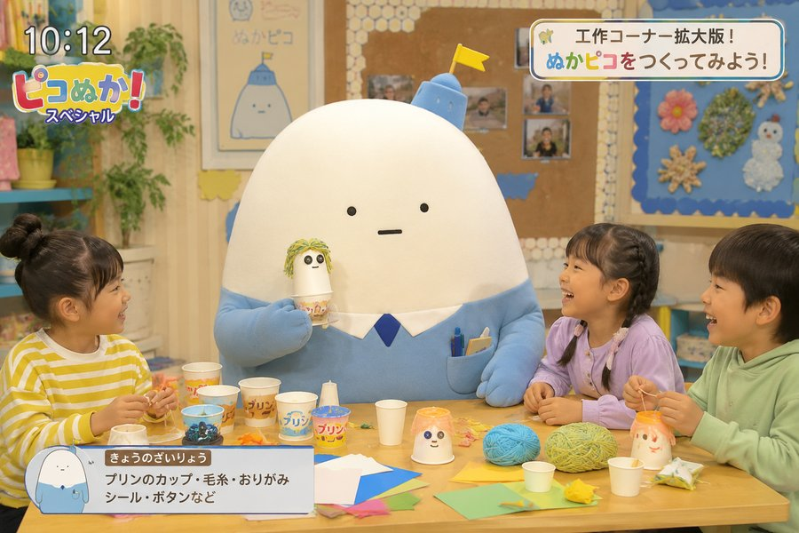
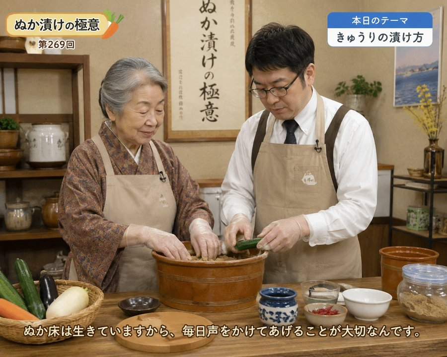
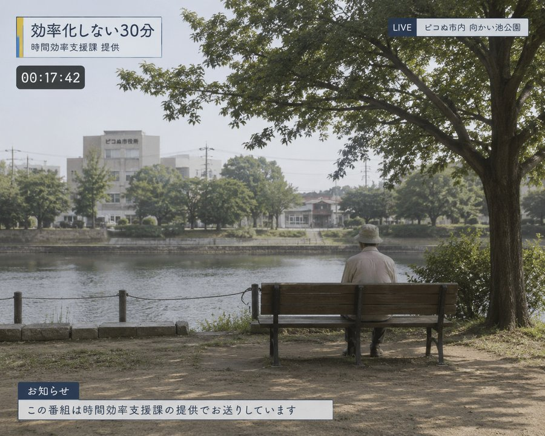

ぬかピコケーブルテレビは、市が自主制作する市民限定チャンネルです。視聴には 市内ケーブルテレビへの加入、またはオンライン配信での住民登録(市民カードの 提示)が必要です。市外の方はご視聴いただけません。
週間番組表
| 月・水・金 17:30〜17:45 | ピコぬか!(短縮版) |
|---|---|
| 月・水・金 19:00〜19:15 | ぬか漬けの極意 |
| 火・木 17:30〜17:45 | ピコぬか!(短縮版) |
| 火・木 19:00〜19:30 | 効率化しない30分 |
| 土曜 10:00〜10:30 | ピコぬか! スペシャル(工作コーナー拡大版) |
| 土曜 14:00〜14:30 | 読み聞かせ会 中継(市立図書館より) |
| 定例会期間中のみ | 市議会中継・録画放送 |
番組紹介
ピコぬか!

未就学児から小学生を対象にした、市民限定の子供向け番組です。市内の日常を 紹介するミニコーナーのほか、工作コーナー「ぬかピコをつくってみよう!」を 毎回放送しています。
ぬかピコをつくってみよう!について
「ぬかピコ」の正確な姿は、これまで誰も見たことがありません。番組では その前提のまま、画用紙・粘土・不要不急保存課から提供された廃材などを 使い、子供たちがそれぞれ自由にぬかピコを作ります。正解や審査はなく、 毎回まったく異なる姿のぬかピコが生まれています。
「ぬかピコ」の正確な姿は、これまで誰も見たことがありません。番組では その前提のまま、画用紙・粘土・不要不急保存課から提供された廃材などを 使い、子供たちがそれぞれ自由にぬかピコを作ります。正解や審査はなく、 毎回まったく異なる姿のぬかピコが生まれています。
ぬか漬けの極意

今回で第269回を迎える、市内でもっとも長く続く料理番組です。10分程度の 調理コーナーですが、毎回のように話題が脱線し、ぬか床の話から始まって 別の話題で終わることも珍しくありません。歴代パーソナリティは6代を数えます。 原作にあたる書籍「ぬか漬けの極意」も、市立図書館にて所蔵しています。
効率化しない30分

時間効率支援課が提供する番組です。特定のテーマや実況はなく、市内のどこかで 誰かが何もしていない30分間を、ただそのまま放送しています。ナレーションは 入りません。
番組内容は放送日により変更となる場合があります。最新の放送情報は、
加入時に配布される番組ガイド、または当ケーブル局窓口までお問い合わせください。